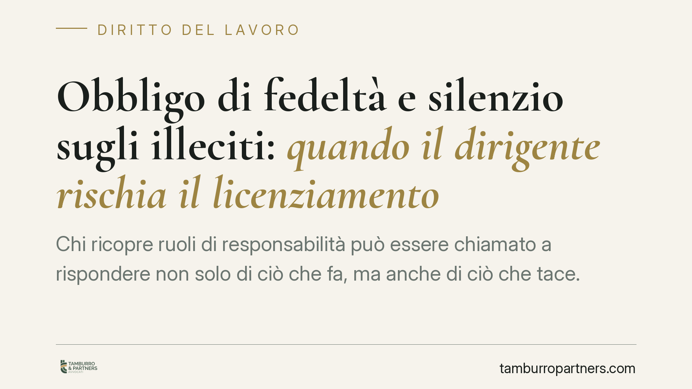

Obbligo di fedeltà e silenzio sugli illeciti: quando il dirigente rischia il licenziamento
Chi ricopre ruoli di responsabilità può essere chiamato a rispondere non solo di ciò che fa, ma anche di ciò che tace. Un orientamento giurisprudenziale consolidato collega il silenzio consapevole sugli illeciti dei sottoposti alla violazione dell'obbligo di fedeltà. Capire i confini di questo dovere è decisivo per chi gestisce persone e processi.

Il problema: tacere può essere una condotta rilevante
Una domanda ricorrente, soprattutto tra chi occupa posizioni apicali: sono obbligato a segnalare gli illeciti commessi dai colleghi o dai miei sottoposti? E il silenzio può costarmi il posto?
La risposta non è univoca, ma un dato emerge con chiarezza dalla giurisprudenza: in presenza di determinate condizioni, l'omissione consapevole di una segnalazione può integrare una violazione contrattuale, con conseguenze anche gravi sul piano disciplinare.
Inquadramento normativo
Il riferimento centrale è l'art. 2105 del codice civile, che impone al lavoratore un obbligo di fedeltà. La norma vieta espressamente di trattare affari in concorrenza con il datore di lavoro e di divulgare o utilizzare notizie riservate dell'impresa in modo pregiudizievole.
La formulazione letterale riguarda condotte "attive" (concorrenza, divulgazione). Un orientamento giurisprudenziale ormai radicato ha però ampliato la portata di questo obbligo, leggendolo alla luce dei principi di correttezza e buona fede nell'esecuzione del contratto (artt. 1175 e 1375 c.c.). In questa lettura, la fedeltà non si esaurisce in una serie di divieti, ma comprende anche doveri di collaborazione volti a non recare pregiudizio agli interessi del datore.
È da qui che discende la possibile rilevanza del silenzio: chi, per la sua posizione, ha il controllo su determinate attività e viene a conoscenza di illeciti, può avere un dovere di attivarsi. Va chiarito, però, che non si tratta di un principio automatico né di un obbligo generalizzato di denuncia: è un'interpretazione che va calata nel caso concreto, in base al ruolo, alla gravità della condotta e al danno potenziale.
Cosa cambia per chi ricopre ruoli di responsabilità
L'intensità del dovere varia in funzione di tre profili.
Consapevolezza. Non rileva ciò che si sarebbe potuto sospettare, ma ciò di cui si ha effettiva conoscenza. L'omissione presuppone che l'illecito fosse noto.
Posizione ricoperta. Quanto più la funzione è elevata e dotata di poteri di vigilanza e controllo, tanto più il silenzio assume rilievo. Al dirigente si chiede un grado di diligenza e di tutela degli interessi aziendali superiore rispetto al dipendente senza responsabilità gerarchiche.
Il silenzio come scelta. Tacere di fronte a condotte illecite che si ha il potere e il dovere di contrastare può essere valutato come una decisione che aderisce all'illecito stesso, non come semplice inerzia.
Resta un contrappeso essenziale: questa impostazione non trasforma ogni lavoratore in un delatore tenuto a riferire qualunque irregolarità. Il perimetro è quello degli obblighi effettivamente connessi al ruolo e alla tutela degli interessi datoriali.
Il rapporto con la disciplina whistleblowing
È utile distinguere due piani che spesso vengono confusi.
Il d.lgs. 24/2023, in attuazione della normativa europea, disciplina le segnalazioni di illeciti e protegge chi segnala da ritorsioni. La sua funzione è garantire canali sicuri e tutelare il segnalante: non introduce, in via generale, un obbligo di denuncia la cui violazione sia di per sé sanzionabile con il licenziamento.
Altro è l'obbligo di fedeltà ex art. 2105 c.c., che opera sul piano del rapporto contrattuale e della sua corretta esecuzione. I due piani non vanno sommati né confusi: la disciplina whistleblowing offre lo strumento attraverso cui adempiere, in modo tutelato, a eventuali doveri di segnalazione; non è la fonte di quei doveri né li estende indiscriminatamente.
Cosa fare in concreto
- Verifica il tuo contratto e i regolamenti interni. Codici etici, procedure e policy aziendali spesso specificano doveri di segnalazione collegati al ruolo: leggerli è il primo passo per conoscere i propri obblighi.
- Documenta per iscritto. Se vieni a conoscenza di una possibile irregolarità, annota date, fatti e circostanze. Una traccia documentale tutela anche chi agisce in buona fede.
- Utilizza i canali di segnalazione previsti. Dove esiste un sistema whistleblowing conforme al d.lgs. 24/2023, è la via più sicura: garantisce riservatezza e protezione da ritorsioni.
- Non agire d'impulso. Evita iniziative autonome o esposizioni pubbliche prima di aver valutato la posizione: una segnalazione mal gestita può generare responsabilità ulteriori.
- Valuta la tua posizione prima di decidere. Quando la situazione è complessa, è opportuna una valutazione del caso concreto, calibrata sul ruolo e sulle procedure applicabili.
In sintesi
L'obbligo di fedeltà non si limita a vietare comportamenti dannosi: in capo a chi dirige può tradursi in doveri di attivazione, il cui inadempimento consapevole è disciplinarmente rilevante. I confini, però, vanno sempre verificati sul caso concreto e sulle regole interne applicabili.
Ogni storia di lavoro ha i suoi tempi.
Se gestisci HR e vuoi un confronto su contenzioso, ispezioni o licenziamenti, scrivi allo studio. Ti rispondiamo entro un giorno lavorativo.